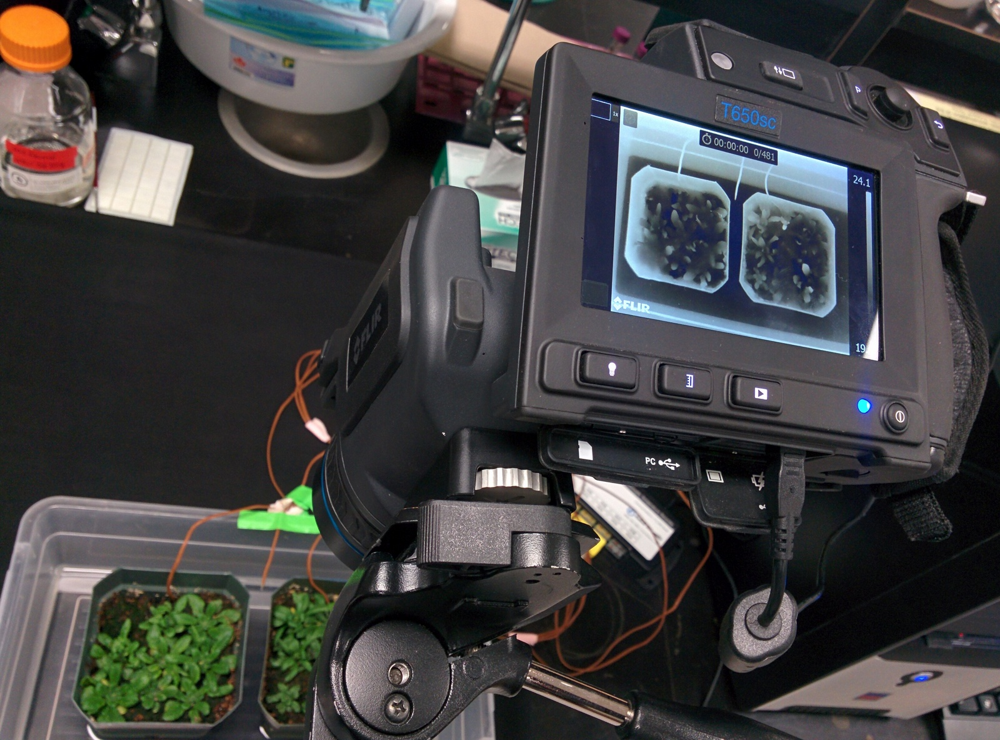
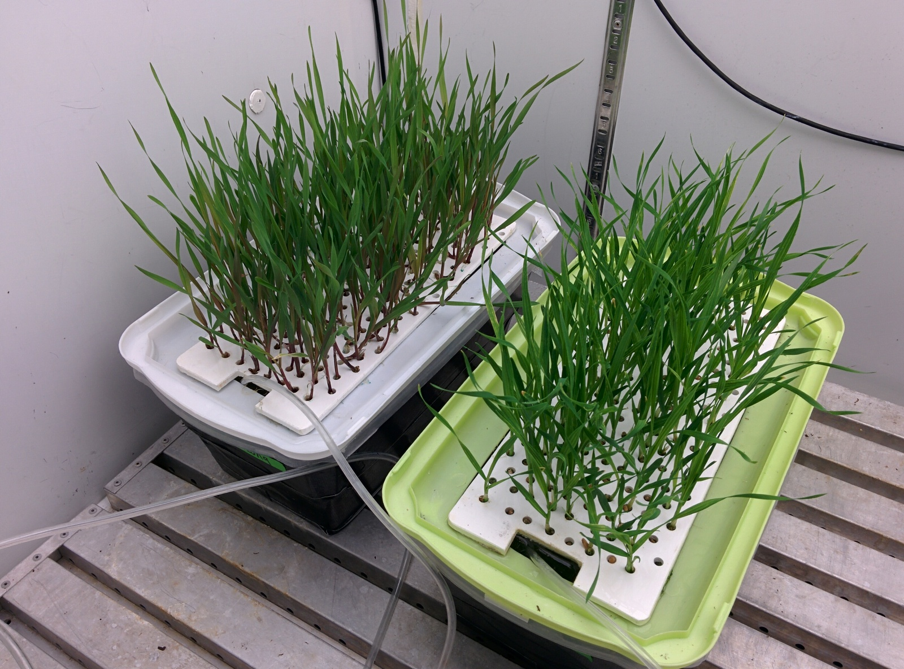
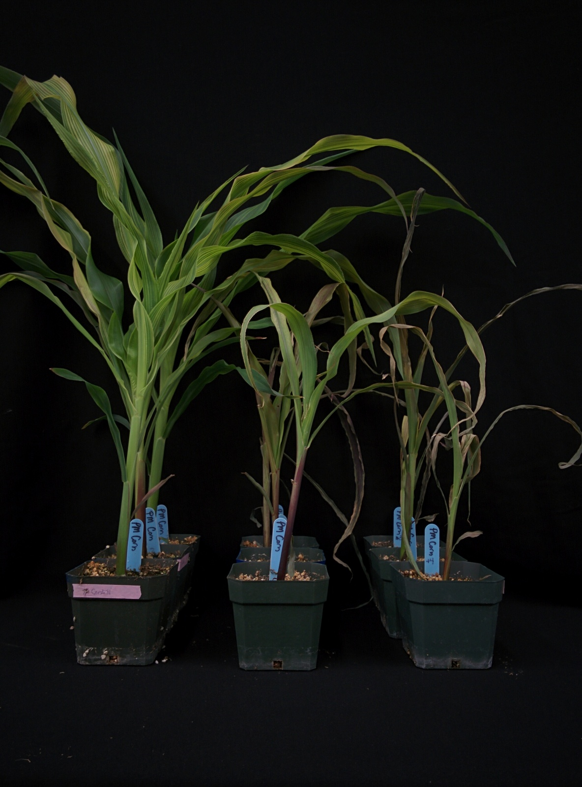
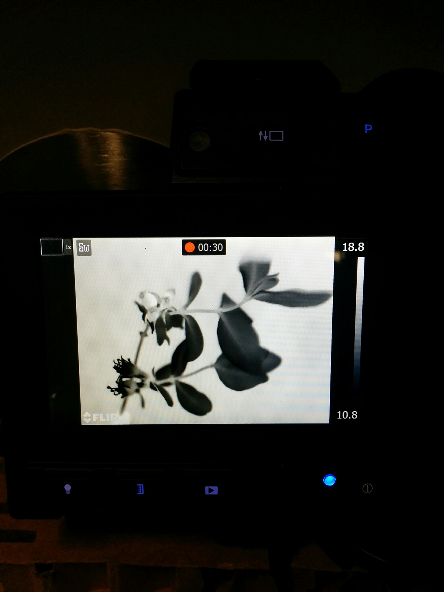
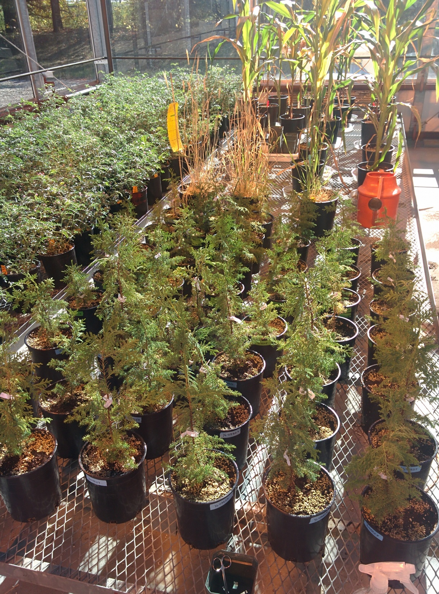
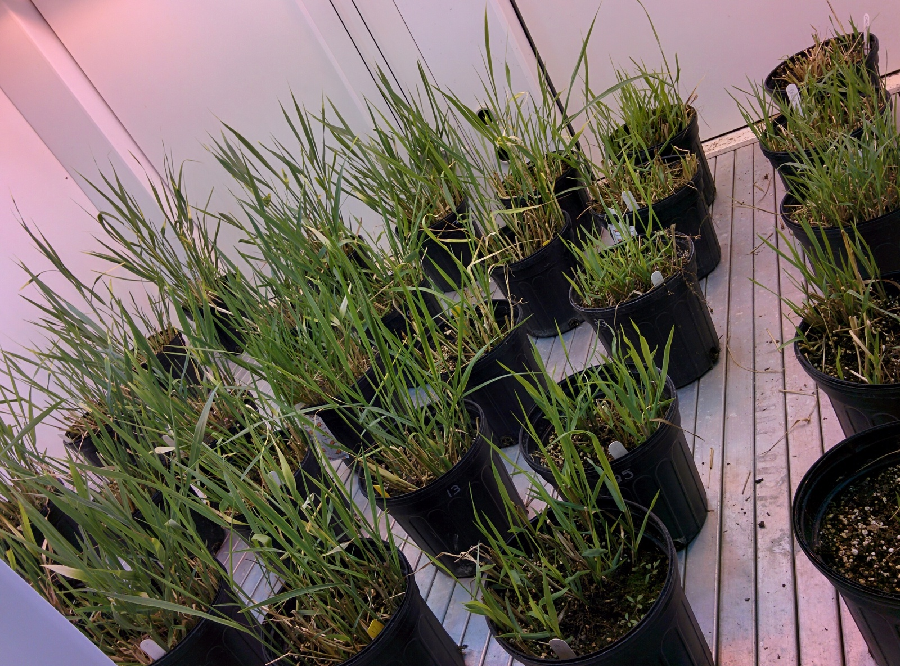

Index
Research
Publications
People
Photos
Index
Research
Publications
People
Photos
Ian Willick
Michigan State University

Infrared thermography
Assessing leaf temperatures during redhydration

Cereal hydroponics

Chilling injury in corn

Visualization of freezing with IRVT

Yellow cedar photoinhibiton study

Switchgrass
Do not reproduce images without express permission
Website Templates
created with
HTML Website Builder
.